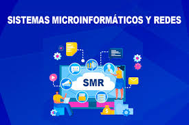

¿Qué aprenderás?
En este ciclo formativo aprenderás a instalar, configurar y mantener sistemas microinformáticos, así como redes locales en entornos empresariales y educativos.
Bienvenido al sitio web del ciclo de Sistemas Microinformáticos y Redes del IES Celia Viñas.

En este ciclo formativo aprenderás a instalar, configurar y mantener sistemas microinformáticos, así como redes locales en entornos empresariales y educativos.
Formar profesionales capaces de resolver incidencias técnicas, administrar redes, garantizar la seguridad y ofrecer soporte informático a usuarios y empresas.
Podrás trabajar como técnico de soporte informático, administrador de redes básicas, técnico en mantenimiento de equipos, o instalador de sistemas.
Una vez finalizado el ciclo, podrás acceder a grados superiores como Administración de Sistemas Informáticos en Red (ASIR) o Desarrollo de Aplicaciones Multiplataforma (DAM).